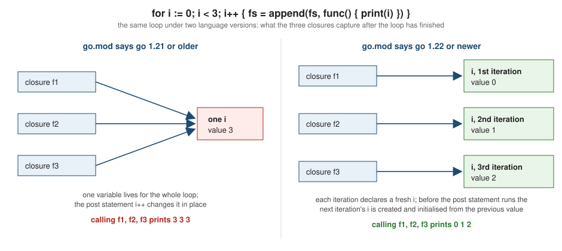

Control Flow
|
This content was generated with the assistance of AI and should be verified against the official documentation before being relied on in production. |
This page is written against Go 1.27 (go1.27.2) and was checked on 2026-10-18. Every example has a go.mod with go 1.27
unless it is explicitly showing an older language version; each was formatted with gofmt, passed go vet, compiled
and run, and the output shown is the real output. Go has only three control-flow keywords for structure — if, for and switch (plus select for channels, covered in
Channels and Select) — and a small set of jump statements:
break, continue, goto, fallthrough and return. There is no while, no do ... while, no ternary
operator, no exceptions to catch (errors are values, see
Error Handling) and no implicit truthiness: every condition must be
a boolean expression. The boolean operators themselves are covered in
Operators and Expressions; the statement and block
structure in Program Structure and Lexical Elements.
Readers coming from C will find the equivalent statements in
the C Reference and, from Rust, in
Rust Control Flow; the differences that matter are called out below.
The if statement
An if statement runs a block when a boolean expression is true, optionally followed by else if branches and a final
else. The braces are mandatory (there is no single-statement form without them), the condition needs no parentheses,
and the opening brace must be on the same line as the if because of the automatic semicolon insertion rule
described in Program Structure and Lexical Elements.
The else keyword must follow the closing brace of the previous block on the same line.
An if may begin with a simple statement, usually a short variable declaration, separated from the condition by a
semicolon. The variables it declares are scoped to the whole if/else if/else chain, and nowhere else. This keeps
temporaries such as err out of the surrounding scope and is the form you will see most often:
if v, ok := m[k]; ok { ... } and if err := f(); err != nil { ... }.
package main
import (
"errors"
"fmt"
"strconv"
)
type LoanState int
const (
Available LoanState = iota
OnLoan
Overdue
)
var stock = map[string]int{"9780134190440": 2, "9781492077213": 0}
func copies(isbn string) (int, error) {
n, ok := stock[isbn]
if !ok {
return 0, errors.New("unknown ISBN " + isbn)
}
return n, nil
}
// lend shows the indent-error-flow idiom: handle the failure and leave
// early, so the successful path stays at the left margin with no else.
func lend(isbn string) (string, error) {
n, err := copies(isbn)
if err != nil {
return "", err
}
if n == 0 {
return "", errors.New("no copies left of " + isbn)
}
stock[isbn] = n - 1
return "lent " + isbn, nil
}
func main() {
// A simple statement before the condition; its variables are scoped to
// the whole if/else if/else chain and no further.
if n, err := strconv.Atoi("42"); err != nil {
fmt.Println("bad number:", err)
} else if n > 40 {
fmt.Println("big", n) // n and err are still visible here
} else {
fmt.Println("small", n)
}
// fmt.Println(n) here would be: undefined: n
// The comma-ok forms fit naturally in the init statement.
if left, ok := stock["9780134190440"]; ok && left > 0 {
fmt.Println("in stock:", left)
}
for _, isbn := range []string{"9780134190440", "9781492077213", "0000"} {
msg, err := lend(isbn)
if err != nil {
fmt.Println("error:", err)
continue
}
fmt.Println(msg)
}
// There is no ternary operator; use an if statement or a small function.
state := OnLoan
label := "available"
if state != Available {
label = "unavailable"
}
fmt.Println(label)
}big 42
in stock: 2
lent 9780134190440
error: no copies left of 9781492077213
error: unknown ISBN 0000
unavailableThe indent-error-flow idiom
When the body of an if ends in a return, break, continue or goto, Go style omits the else and continues at
the same indentation. The error case is handled and left; the successful path then reads straight down the left margin.
lend above is the pattern: it never nests the happy path inside an else. The Code Review Comments wiki page names it
"indent error flow", and linters such as revive report an else after a return. Effective Go describes the same
convention: when the body of an if ends in break, continue, goto or return, the unnecessary else is omitted.
A consequence worth remembering is the scope of the init statement. Because n and err are scoped to the chain,
code that needs the value afterwards must declare it before the if, as parse does:
package main
import (
"fmt"
"strconv"
)
func parse(s string) (int, error) {
// n and err are declared in the function scope, so they stay visible
// after the if statement: no init statement here.
n, err := strconv.Atoi(s)
if err != nil {
return 0, fmt.Errorf("parse %q: %w", s, err)
}
return n * 2, nil
}
func main() {
fmt.Println(parse("21"))
fmt.Println(parse("x"))
}42 <nil>
0 parse "x": strconv.Atoi: parsing "x": invalid syntaxErrors the compiler reports for if
The condition must be of boolean type. There is no conversion of integers, pointers or strings to a boolean, which
removes the classic C mistake if (x = 3), and there is no ternary operator; use an if statement, or a small
function, instead.
package main
import "fmt"
func main() {
n := 1
if n {
fmt.Println("truthy")
}
for n {
}
if n = 2; n > 1 {
fmt.Println(m)
}
var s string
if s != "" && n {
}
if !n {
}
}main.go:7:5: non-boolean condition in if statement
main.go:10:6: non-boolean condition in for statement
main.go:13:15: undefined: m
main.go:16:5: invalid operation: s != "" && n (mismatched types untyped bool and int)
main.go:18:6: invalid operation: operator ! not defined on n (variable of type int)Source: The Go Programming Language Specification: If statements and The Go Programming Language Specification: For statements
The next program shows what happens when the else is moved to its own line. The scanner inserts a semicolon after the
closing brace, so the else has nothing to attach to:
package main
import "fmt"
func main() {
n := 1
if n == 1 {
fmt.Println("one")
}
else {
fmt.Println("other")
}
}main.go:10:2: syntax error: unexpected keyword else, expected }The for statement
for is Go’s only loop keyword. It has four shapes, selected by what follows the keyword:
Every form may contain break (leave the loop) and continue (skip to the next iteration; in the three-clause form the
post statement still runs). The specification calls them the for clause, the condition, the range clause and
the bare for with no condition: For statements.
package main
import "fmt"
func main() {
// 1. Three components: init; condition; post.
for i := 0; i < 3; i++ {
fmt.Print(i, " ")
}
fmt.Println()
// 2. Condition only: Go's while loop.
n := 1
for n < 100 {
n *= 3
}
fmt.Println("n =", n)
// 3. No clauses at all: loop forever until break/return/panic.
count := 0
for {
count++
if count == 4 {
break
}
}
fmt.Println("count =", count)
// 4. A range clause, here over an integer (Go 1.22).
for i := range 3 {
fmt.Print(i, " ")
}
fmt.Println()
// Without a variable at all: just repeat n times.
hits := 0
for range 5 {
hits++
}
fmt.Println("hits =", hits)
// The init and post statements may be tuple assignments: two indices.
for i, j := 0, 4; i < j; i, j = i+1, j-1 {
fmt.Print("(", i, ",", j, ") ")
}
fmt.Println()
// continue skips to the post statement; the condition is then re-tested.
for i := 0; i < 6; i++ {
if i%2 == 0 {
continue
}
fmt.Print(i, " ")
}
fmt.Println()
}0 1 2
n = 243
count = 4
0 1 2
hits = 5
(0,4) (1,3)
1 3 5Source: The Go Programming Language Specification: For statements with for clause and A Tour of Go: For
Points to remember about the forms:
-
In the three-clause form the init and post statements are simple statements, so
i++andi, j = i+1, j-1are legal but a block is not. The init statement may be omitted (for ; cond; post), andgofmtwrites the condition-only form asfor cond. -
A loop with no condition at all runs until a
break,return,gotoout of the loop, or apanic. Aforwith no condition and nobreakis a terminating statement, which matters for missing-return analysis (see Terminating statements and missing return). -
Since Go 1.22 the three-clause form is increasingly written
for i := range n; therangeintmodernizer ingo fixrewrites simple counting loops. -
The condition is evaluated before every iteration, including
len(s): a loopfor i := 0; i < len(s); i++re-reads the length each time, which matters if the body appends to or reslicess.
Modifying the loop variable in the body
Assigning to the three-clause loop variable inside the body is still allowed and still steers the loop, which is the
only way to skip ahead in that form. A range loop is different: assigning to its variables never changes which element
comes next.
package main
import "fmt"
func main() {
// Modifying the loop variable inside the body is still allowed and
// still affects the loop: the value is copied into the next
// iteration's fresh variable before the post statement runs.
for i := 0; i < 10; i++ {
if i%3 == 0 {
i += 2 // skip ahead
}
fmt.Print(i, " ")
}
fmt.Println()
// A range loop's variables are fresh each iteration, but assigning to
// them never changes where the loop goes next.
for i := range 5 {
i += 10
fmt.Print(i, " ")
}
fmt.Println()
}2 5 8 11
10 11 12 13 14Range clauses
A for ... range loop iterates over the elements of a value. The range expression is evaluated once, before the loop
begins, and what the iteration variables receive depends on its type. All variables are optional; for range x runs
once per element with no variable.
| Range expression | First value | Second value | Notes |
|---|---|---|---|
array, pointer to array, slice |
index |
element copy |
the length is fixed when the loop starts (slice); arrays are copied first if the value is used |
string |
byte offset of the rune |
the |
invalid bytes give U+FFFD and advance one byte |
map |
key |
value copy |
order unspecified and randomised on purpose; deleting is safe |
channel |
element received |
not allowed |
runs until the channel is closed; a |
integer |
|
not allowed |
an untyped constant takes the type of the iteration variable, or |
function |
as yielded |
as yielded |
the loop body is turned into the |
package main
import (
"fmt"
"maps"
"slices"
)
type Book struct{ Title string }
func main() {
// Array and slice: index and element.
titles := []string{"Dune", "Emma", "Ulysses"}
for i, t := range titles {
fmt.Print(i, "=", t, " ")
}
fmt.Println()
for i := range titles { // index only
fmt.Print(i, " ")
}
fmt.Println()
for _, t := range titles { // element only
fmt.Print(t, " ")
}
fmt.Println()
// Pointer to array: ranges like the array itself.
arr := [3]int{10, 20, 30}
for i, v := range &arr {
fmt.Print(i, ":", v, " ")
}
fmt.Println()
// String: byte offset and rune, decoded as UTF-8. An invalid byte
// yields U+FFFD and advances one byte.
for i, r := range "héllo\xffz" {
fmt.Printf("%d:%q ", i, r)
}
fmt.Println()
// Map: the order is unspecified and randomised, so sort the keys when
// the order matters (slices.Sorted and maps.Keys, Go 1.23).
copies := map[string]int{"Dune": 3, "Emma": 1, "Ulysses": 0}
for _, k := range slices.Sorted(maps.Keys(copies)) {
fmt.Print(k, "=", copies[k], " ")
}
fmt.Println()
// Channel: receives until the channel is closed.
ch := make(chan string, 3)
ch <- "a"
ch <- "b"
close(ch)
for s := range ch {
fmt.Print(s, " ")
}
fmt.Println()
// Integer (Go 1.22): 0..n-1. The variable has the type of n.
for i := range uint8(3) {
fmt.Printf("%T(%d) ", i, i)
}
fmt.Println()
}0=Dune 1=Emma 2=Ulysses
0 1 2
Dune Emma Ulysses
0:10 1:20 2:30
0:'h' 1:'é' 3:'l' 4:'l' 5:'o' 6:'�' 7:'z'
Dune=3 Emma=1 Ulysses=0
a b
uint8(0) uint8(1) uint8(2)Notes on the individual cases:
-
Strings. The loop decodes UTF-8: the first value is the byte offset where the rune starts (here
1and3, becauseétakes two bytes), not the rune count. A byte that is not valid UTF-8 producesU+FFFDand advances by one byte. To iterate bytes, index the string withfor i := 0; i < len(s); i++or convert with[]byte(s). See Strings, Runes and UTF-8. -
Maps. The runtime deliberately randomises the starting point of every range loop so that no program can come to depend on an order. When a stable order matters, collect and sort the keys:
slices.Sorted(maps.Keys(m))(Go 1.23). If an entry is removed before it is reached it will not be produced; if an entry is added during the loop it may or may not be produced. -
Channels. Only one iteration variable is allowed. The loop ends when the channel is closed and drained; if nobody ever closes it the loop blocks forever, which is a common goroutine leak. Ranging over a send-only channel is a compile error.
-
Integers.
for i := range nis the idiomatic counting loop since Go 1.22. Ifnis negative or zero the body does not run. The type ofiis the type ofn; for an untyped constant such as3, it isint, or the type of an existing variable if the loop assigns instead of declaring.
Range errors
package main
import "fmt"
func main() {
var f float64
for f = range 3 {
fmt.Println(f)
}
for i, v := range 3 {
fmt.Println(i, v)
}
ch := make(chan int)
for i, v := range ch {
fmt.Println(i, v)
}
for i := range 3.5 {
fmt.Println(i)
}
var send chan<- int
for v := range send {
fmt.Println(v)
}
}main.go:7:6: cannot use iteration variable of type float64
main.go:10:9: range over 3 (untyped int constant) permits only one iteration variable
main.go:14:9: range over ch (variable of type chan int) permits only one iteration variable
main.go:17:17: cannot range over 3.5 (untyped float constant)
main.go:21:17: cannot range over send (variable of type chan<- int): receive from send-only channel chan<- intThe language version check applies to range-over-int: a module whose go.mod says go 1.21 cannot use it even though the
installed toolchain is newer (see Loop variables and the go line below).
package main
import "fmt"
func main() {
for i := range 3 {
fmt.Println(i)
}
}module example.com/old3
go 1.21main.go:6:17: cannot range over 3 (untyped int constant): requires go1.22 or later (-lang was set to go1.21; check go.mod)Range copies values
The value variable is a copy of the element. Changing it does not change the slice, array or map, and for large structs the copy has a cost. To modify elements, index the slice, or store pointers.
package main
import "fmt"
type Book struct {
Title string
Copies int
}
func main() {
books := []Book{{"Dune", 1}, {"Emma", 2}}
// v is a copy of the element: changing it does not change the slice.
for _, v := range books {
v.Copies += 100
}
fmt.Println(books)
// Use the index to modify in place...
for i := range books {
books[i].Copies += 100
}
fmt.Println(books)
// ...or keep pointers in the slice.
ptrs := []*Book{{"Dune", 1}, {"Emma", 2}}
for _, p := range ptrs {
p.Copies *= 10
}
fmt.Println(*ptrs[0], *ptrs[1])
// Ranging over an array evaluates a copy of the whole array first when
// the value variable is used; ranging over a slice shares its storage.
arr := [3]int{1, 2, 3}
for i, v := range arr {
arr[2] = 99 // the loop still sees the copy
if i == 2 {
fmt.Println("array range sees", v)
}
}
sl := []int{1, 2, 3}
for i, v := range sl {
sl[2] = 99 // the loop sees the update
if i == 2 {
fmt.Println("slice range sees", v)
}
}
}[{Dune 1} {Emma 2}]
[{Dune 101} {Emma 102}]
{Dune 10} {Emma 20}
array range sees 3
slice range sees 99The last pair of lines is the subtle part of the specification: ranging over an array value with a value variable
evaluates a copy of the array, so later assignments to arr are not seen; ranging over a slice observes the shared backing
array. Ranging over &arr, or using only the index, does not copy. The copy may be elided by the compiler when it
cannot be observed, but the semantics are as described.
Modifying a collection while ranging over it
package main
import "fmt"
func main() {
// The range expression is evaluated once, before the loop begins, so
// appending to the slice does not extend the iteration.
s := []int{1, 2, 3}
iterations := 0
for _, v := range s {
s = append(s, v*10)
iterations++
}
fmt.Println(iterations, s)
// Deleting from a map while ranging over it is safe: an entry removed
// before it is reached is never produced.
m := map[int]bool{1: true, 2: true, 3: true, 4: true}
for k := range m {
delete(m, k)
}
fmt.Println(len(m))
// The same holds for clear.
m2 := map[int]bool{1: true, 2: true}
for range m2 {
clear(m2)
}
fmt.Println(len(m2))
// Entries added during iteration may or may not be visited; the count
// below can differ from run to run, so only its bounds are meaningful.
m3 := map[int]bool{0: true}
visited := 0
for k := range m3 {
visited++
if k < 50 {
m3[k+100] = true
}
}
fmt.Println(visited >= 1, visited <= len(m3))
}3 [1 2 3 10 20 30]
0
0
true trueThe slice length is fixed by the one-time evaluation of the range expression, so appending inside the loop does not make it run forever, although the appended elements may land in a new backing array. For maps the rule is stricter: deleting is fine, adding is allowed but non-deterministic, so never write code whose result depends on it.
Range over functions
Since Go 1.23, a range expression may be a function that accepts a yield callback; the loop body becomes the callback,
and break, continue, return and goto work as usual (the runtime converts them into the yield function returning
false). The iter.Seq[V] and iter.Seq2[K, V] types name the two common shapes, and the slices and maps
packages return them (slices.Values, slices.Backward, maps.Keys, …). The full treatment is in
Iterators and Range-over-Func.
package main
import (
"fmt"
"iter"
"slices"
)
type Book struct {
Title string
Year int
}
type Shelf struct{ books []Book }
// All returns an iterator; the loop body becomes the yield function.
func (s *Shelf) All() iter.Seq2[int, Book] {
return func(yield func(int, Book) bool) {
for i, b := range s.books {
if !yield(i, b) {
return // the loop body executed break or return
}
}
}
}
func (s *Shelf) Titles() iter.Seq[string] {
return func(yield func(string) bool) {
for _, b := range s.books {
if !yield(b.Title) {
return
}
}
}
}
func find(s *Shelf, year int) (Book, bool) {
for _, b := range s.All() {
if b.Year == year {
return b, true // return from inside the loop body works
}
}
return Book{}, false
}
func main() {
s := &Shelf{[]Book{{"Dune", 1965}, {"Emma", 1815}, {"Ulysses", 1922}}}
for i, b := range s.All() {
if i == 2 {
break // stops the iterator
}
fmt.Println(i, b.Title)
}
fmt.Println(slices.Collect(s.Titles()))
fmt.Println(find(s, 1922))
for i := range slices.Backward(s.books) {
fmt.Print(i, " ")
}
fmt.Println()
}0 Dune
1 Emma
[Dune Emma Ulysses]
{Ulysses 1922} true
2 1 0Source: The Go Blog: Range Over Function Types and iter
Loop variables and the go line
This is the most important language change of the last few years for everyday code, and it depends on a setting that many programmers never look at.
The old behaviour
Before Go 1.22 a for loop declared its variables once, before the first iteration. A closure or pointer that captured the
variable saw the value it had when the loop ended, because every iteration reused the same storage. The result was the
classic bug: goroutines started in a loop all print the last element, a slice of &v pointers all point to the same
variable, and a deferred or stored closure sees the final index. The standard defence was a defensive copy on the
first line of the body (v := v), and go vet had a loopclosure analyzer that caught only the most obvious
cases.
The new behaviour
With Go 1.22 each iteration has its own copy of the variables declared by the for clause, for both the three-clause
and the range forms. The spec says that the variable used by the first iteration is declared by the init statement, and
that the variable used by each later iteration is declared implicitly before the post statement runs and is initialised
to the value of the previous iteration’s variable at that moment. A closure created in an iteration therefore keeps
its own variable, and the post statement i++ increments the new copy, not the one a closure captured.

Here is the same program, byte for byte, built under the two language versions. The first run is the module with go 1.27:
module example.com/new
go 1.27package main
import "fmt"
func main() {
// Closures capture the variable, not a value. Collect them, call later.
var prints []func()
for i := 1; i <= 3; i++ {
prints = append(prints, func() { fmt.Print(i, " ") })
}
for _, p := range prints {
p()
}
fmt.Println()
// Same with range, and with pointers to the loop variable.
var ptrs []*string
for _, t := range []string{"Dune", "Emma", "Ulysses"} {
ptrs = append(ptrs, &t)
}
for _, p := range ptrs {
fmt.Print(*p, " ")
}
fmt.Println()
// Closures that modify their loop variable: with per-iteration
// variables each closure owns its own counter.
var fs []func() int
for i := 0; i < 6; i += 2 {
fs = append(fs, func() int { i++; return i })
}
for _, f := range fs {
fmt.Print(f(), " ", f(), " | ")
}
fmt.Println()
}1 2 3
Dune Emma Ulysses
1 2 | 3 4 | 5 6 |The go line decides
The new semantics are not tied to the toolchain that compiles the code, they are tied to the language version of each
package, taken from the go line of the module’s go.mod. A package in a module that says go 1.21 keeps the old
semantics even when it is built with Go 1.27, so that existing code never changes meaning behind its author’s back
and the change can be adopted module by module. Moving the go line to 1.22 or later is what turns the new
behaviour on. The same program, with the go.mod below and no change to the source:
module example.com/old
go 1.214 4 4
Ulysses Ulysses Ulysses
7 8 | 9 10 | 11 12 |This is the same source file as above and the same Go 1.27 compiler; only the go line differs. Go 1.21 and later
refuse to compile a module whose go line is newer than the toolchain (the toolchain mechanism then selects or
downloads a newer toolchain, see Toolchain Versions and Compatibility).
The language version can also be set per file with a //go:build line. A file in a go 1.27 module that begins with
//go:build go1.21 is compiled with the language semantics of Go 1.21, which includes the old loop variables. In a module whose go line is 1.21 or later, a build constraint
that has a term for a Go release sets the language version used to compile that file to the minimum version the
constraint implies, so a constraint can be used to downgrade a single file (for instance to keep an old file
unchanged while the rest of the module moves on). The two files below belong to one package in a go 1.27 module:
package main
import "fmt"
func main() {
fmt.Println("new semantics (go.mod says go 1.27):")
newSemantics()
fmt.Println("old semantics (file has //go:build go1.21):")
oldSemantics()
}
func newSemantics() {
var fs []func()
for i := 0; i < 3; i++ {
fs = append(fs, func() { fmt.Print(i, " ") })
}
for _, f := range fs {
f()
}
fmt.Println()
}//go:build go1.21
package main
import "fmt"
func oldSemantics() {
var fs []func()
for i := 0; i < 3; i++ {
fs = append(fs, func() { fmt.Print(i, " ") })
}
for _, f := range fs {
f()
}
fmt.Println()
}new semantics (go.mod says go 1.27):
0 1 2
old semantics (file has //go:build go1.21):
3 3 3Other places the version shows up:
-
go vetand the compiler gate new language features on the version:range 3undergo 1.21fails withrequires go1.22 or later(shown above). Thestdversionvet analyzer additionally reports uses of library symbols that are newer than thegoline, which is howsync.WaitGroup.Go(Go 1.25) was flagged when the old-semantics example was first tried in ago 1.21module. -
With the old semantics,
go vetreports the classic bug through theloopclosureanalyzer (shown below). The report exists only while the module’s language version is below 1.22, since the new semantics make the code correct. -
Go 1.21 shipped a preview:
GOEXPERIMENT=loopvarapplied the new semantics to every loop regardless of thegoline, which was a way to find tests that depended on the old behaviour before upgrading. Thebisecttool (golang.org/x/tools/cmd/bisect, run asbisect -compile=loopvar go test) finds the single loop that makes a test fail after the switch. -
The compiler can say which loops changed:
go build -gcflags=-d=loopvar=2(a debug flag, not a stable interface) prints one line per loop variable and whether the per-iteration copy had to be heap-allocated (output shown below).
The goroutine form of the bug, with a mutex and a sort so the program is deterministic when the variable is correct:
package main
import (
"fmt"
"slices"
"sync"
)
func main() {
var mu sync.Mutex
var seen []string
var wg sync.WaitGroup
for _, v := range []string{"a", "b", "c"} {
wg.Add(1)
go func() {
defer wg.Done()
mu.Lock()
seen = append(seen, v)
mu.Unlock()
}()
}
wg.Wait()
slices.Sort(seen)
fmt.Println(seen)
}[a b c]Run in a module whose go line is 1.21, go vet reports the capture:
main.go:18:24: loop variable v captured by func literaland the compiler’s loop report for the earlier example is:
main.go:8:6: loop variable i now per-iteration, stack-allocated
main.go:18:9: loop variable t now per-iteration, heap-allocated
main.go:29:6: loop variable i now per-iteration, heap-allocatedSource: Go Wiki: LoopvarExperiment and loopclosure analyzer
What it costs and what it changes
A per-iteration variable that is captured by a closure that escapes needs its own heap allocation per iteration instead
of one for the whole loop. The compiler allocates on the heap only when the variable escapes, as the report above
shows (stack-allocated for the first loop). The Go team notes that an extra allocation is sometimes inherent to fixing a
latent bug, and that in very hot loops it can show up as a slowdown that an allocation profile makes obvious.
Because the old pattern was both common and harmless once the new semantics apply, the forvar analyzer in
go fix (Go 1.26 added a modernizing go fix) removes the now-redundant copies, and rangeint rewrites counting loops:
package main
import "fmt"
func main() {
var prints []func()
for _, v := range []string{"a", "b"} {
v := v // pre-1.22 defensive copy
prints = append(prints, func() { fmt.Print(v, " ") })
}
for i := 0; i < 3; i++ {
fmt.Print(i, " ")
}
for _, p := range prints {
p()
}
fmt.Println()
}@@ -5,10 +5,9 @@
func main() {
var prints []func()
for _, v := range []string{"a", "b"} {
- v := v // pre-1.22 defensive copy
prints = append(prints, func() { fmt.Print(v, " ") })
}
- for i := 0; i < 3; i++ {
+ for i := range 3 {
fmt.Print(i, " ")
}
for _, p := range prints {Source: cmd/fix
A related bug that the change fixes are tests that call t.Parallel() inside a loop over test cases: under the old rules
every parallel subtest saw the last case. See Testing for table-driven tests and
Common Mistakes and Gotchas for the other pitfalls.
The switch statement
A switch chooses one branch among several. Go has two forms: the expression switch, which compares a value with the
case expressions, and the type switch, covered next. The expression switch differs from the C family in four ways:
-
Cases do not fall through. Each case body ends the switch when it completes; there is no
breakneeded. To run the next body,fallthroughmust be the last statement of the case. -
Case expressions need not be constants; they are evaluated left to right and top to bottom until one matches. Duplicate constant cases are a compile error.
-
One case can list several values:
case 'a', 'e', 'i':. -
The tag may be omitted, in which case it defaults to
trueand each case is a boolean expression. This replaces longif/else ifchains.
Like if, a switch may begin with a simple statement, and default may appear anywhere in the list (it is evaluated only
if nothing else matches). A break inside a switch leaves the switch, not an enclosing loop, which surprises people
coming from languages where break in a switch is mandatory.
package main
import (
"fmt"
"strings"
)
type LoanState int
const (
Available LoanState = iota
OnLoan
Overdue
)
func (s LoanState) String() string {
switch s {
case Available:
return "available"
case OnLoan:
return "on loan"
case Overdue:
return "overdue"
default:
return fmt.Sprintf("LoanState(%d)", int(s))
}
}
func fine(days int) string {
// A tagless switch is a cleaner if/else if chain: each case is a bool.
switch {
case days <= 0:
return "none"
case days <= 7:
return "small"
case days <= 30:
return "medium"
default:
return "large"
}
}
func kind(r rune) string {
switch r {
case 'a', 'e', 'i', 'o', 'u': // several values share one case
return "vowel"
case ' ', '\t', '\n':
return "space"
}
return "other"
}
func main() {
for _, s := range []LoanState{Available, OnLoan, Overdue, 7} {
fmt.Print(s, "; ")
}
fmt.Println()
fmt.Println(fine(0), fine(3), fine(20), fine(99))
fmt.Println(kind('e'), kind(' '), kind('z'))
// fallthrough transfers control to the next case body unconditionally
// (it does not test the next condition), and must be the last statement.
for _, n := range []int{1, 2, 3} {
switch n {
case 1:
fmt.Print("one ")
fallthrough
case 2:
fmt.Print("two-or-after-one ")
case 3:
fmt.Print("three ")
}
}
fmt.Println()
// Init statement, and default may appear anywhere.
switch ext := strings.ToLower(".JSON"); ext {
default:
fmt.Println("unknown", ext)
case ".json":
fmt.Println("json")
}
// break leaves the switch only; use a label to leave the loop.
for i := 0; i < 3; i++ {
switch i {
case 1:
break // leaves the switch, the for loop continues
default:
fmt.Print("i=", i, " ")
}
}
fmt.Println()
}available; on loan; overdue; LoanState(7);
none small medium large
vowel space other
one two-or-after-one two-or-after-one three
json
i=0 i=2The LoanState.String method above is the usual home for a switch on an iota enumeration (see
Variables, Constants and iota). The compiler does not
check that a switch over such an enumeration is exhaustive; the exhaustive linter and gopls do. The printed
LoanState(7) comes from the default branch, which is where an unexpected value should be handled rather than ignored.
Switch errors
package main
import "fmt"
func main() {
n := 1
switch n {
case 1:
fmt.Println("a")
case 1:
fmt.Println("b")
case "x":
fmt.Println("c")
case 2:
fmt.Println("d")
fallthrough
}
switch {
case n:
}
switch n {
default:
default:
}
}main.go:10:7: duplicate case 1 (constant of type int) in expression switch
./main.go:8:7: previous case
main.go:12:7: cannot convert "x" (untyped string constant) to type int
main.go:16:3: cannot fallthrough final case in switch
main.go:19:7: invalid case n in switch on true (mismatched types int and bool)
main.go:23:2: multiple defaults (first at ./main.go:22:2)Source: The Go Programming Language Specification: Expression switches and The Go Programming Language Specification: Fallthrough statements
The case "x" error is a type error: a switch compares the tag with each case using ==, so every case must be
comparable with the tag’s type (see
Operators and Expressions). fallthrough is not allowed in the
final case because there is nothing to fall into.
Type switches
A type switch examines the dynamic type of an interface value. Its form is switch x := v.(type), with cases that name
types instead of values. Inside a case that names exactly one type, x has that type; inside a case with several
types (or default), x keeps the type of v. A case can be nil (matches a nil interface) and can name an interface
type, which matches any dynamic type that implements it. Cases are tried in order, so put specific types before general
interfaces.
package main
import (
"errors"
"fmt"
"io"
)
type Book struct{ Title string }
func (b Book) String() string { return "Book(" + b.Title + ")" }
func describe(v any) string {
switch x := v.(type) {
case nil:
return "nil"
case int, int64: // several types: x keeps the type of v (any)
return fmt.Sprintf("integer %v (%T)", x, x)
case string:
return "string of length " + fmt.Sprint(len(x)) // x is a string here
case Book:
return "book titled " + x.Title
case *Book:
return "pointer to " + x.Title
case fmt.Stringer: // an interface type: any dynamic type with String()
return "stringer " + x.String()
case error:
return "error " + x.Error()
case []int:
return fmt.Sprint("slice of ", len(x))
case func() int:
return fmt.Sprint("func returning ", x())
default:
return fmt.Sprintf("other %T", x)
}
}
func main() {
vals := []any{nil, 3, int64(4), "dune", Book{"Emma"}, &Book{"Ulysses"},
io.EOF, []int{1, 2}, func() int { return 9 }, 2.5, errors.New("boom")}
for _, v := range vals {
fmt.Println(describe(v))
}
}nil
integer 3 (int)
integer 4 (int64)
string of length 4
book titled Emma
pointer to Ulysses
error EOF
slice of 2
func returning 9
other float64
error boomNote that Book is matched by its own case before fmt.Stringer, although Book also implements Stringer; the output
book titled Emma shows the first matching case wins. Errors the compiler reports for type switches:
package main
import "fmt"
type Shape interface{ Area() float64 }
type Sq struct{}
func main() {
var v any = 1
switch x := v.(type) {
case int:
fmt.Println("int")
fallthrough
case string:
}
var s Shape
switch s.(type) {
case Sq:
case int:
}
n := 3
switch n.(type) {
}
switch v.(type) {
case int:
case int:
}
}main.go:11:9: x declared and not used
main.go:14:3: cannot fallthrough in type switch
main.go:19:7: impossible type switch case: Sq
s (variable of interface type Shape) cannot have dynamic type Sq (missing method Area)
main.go:20:7: impossible type switch case: int
s (variable of interface type Shape) cannot have dynamic type int (missing method Area)
main.go:23:9: n (variable of type int) is not an interface
main.go:27:7: duplicate case int in type switch
./main.go:26:7: previous casefallthrough is not permitted in a type switch because the variable would have different types in different cases. A
case whose type can never satisfy the interface is reported as "impossible"; the same check applies to a type
assertion. Interfaces and their method sets are in Interfaces; with
generics, many type switches over any can be replaced by constraints (see
Generics). The select statement, which is a switch over channel
operations, is the subject of Channels and Select.
Labels, break, continue and goto
A label names a statement so that jump statements can refer to it. break leaves the innermost for, switch or
select; continue starts the next iteration of the innermost for. With a label, either can target an enclosing one,
which is how nested loops are exited without a flag variable.
package main
import "fmt"
func main() {
grid := [][]int{{1, 2, 3}, {4, -1, 6}, {7, 8, 9}}
// continue with a label jumps to the next iteration of the labelled loop.
rows:
for r, row := range grid {
for c, v := range row {
if v < 0 {
fmt.Printf("negative at (%d,%d): skip the rest of row %d\n", r, c, r)
continue rows
}
fmt.Print(v, " ")
}
fmt.Println()
}
// break with a label leaves the labelled statement: a for, switch or select.
found := [2]int{-1, -1}
search:
for r, row := range grid {
for c, v := range row {
if v == 8 {
found = [2]int{r, c}
break search
}
}
}
fmt.Println("found 8 at", found)
// Inside a switch (or select) within a loop, a plain break only leaves the
// switch, so a label is needed to leave the loop.
loop:
for i := 0; ; i++ {
switch {
case i == 2:
fmt.Println("stop at", i)
break loop
default:
fmt.Println("i =", i)
}
}
}1 2 3
4 negative at (1,1): skip the rest of row 1
7 8 9
found 8 at [2 1]
i = 0
i = 1
stop at 2Source: Labeled statements, Break statements and Continue statements
The rules the compiler enforces:
-
a label that is declared but never used is an error ("defined and not used"), unlike an unused function or constant;
-
break LrequiresLto label an enclosingfor,switchorselect, andcontinue Lan enclosingfor; a labelled block or plain statement cannot be a target; -
a label’s scope is the whole function body, and labels have their own namespace (a label may share a name with a variable), but two labels in one function cannot have the same name.
package main
import "fmt"
func main() {
unused:
for i := 0; i < 2; i++ {
fmt.Println(i)
}
outer:
fmt.Println("not a loop")
for i := 0; i < 2; i++ {
continue outer
}
for {
break nowhere
}
dup:
for {
break dup
}
dup:
for {
continue dup
}
blk:
{
break blk
}
}main.go:6:1: label unused defined and not used
main.go:13:12: invalid continue label outer
main.go:16:9: break label not defined: nowhere
main.go:22:1: label dup already defined at ./main.go:18:1
main.go:24:12: invalid continue label dup
main.go:28:9: invalid break label blkSource: The Go Programming Language Specification: Labeled statements, The Go Programming Language Specification: Break statements and The Go Programming Language Specification: Continue statements
goto
goto L transfers control to the statement labelled L in the same function. It is legal, and in a few places (retry
loops, shared cleanup in code generated by tools) it is the clearest tool; the standard library uses it sparingly. The
specification adds two restrictions that keep it from breaking initialization: executing goto must not cause any
variable to come into scope that was not already in scope at the point of the goto, and it must not jump into a
block.
package main
import (
"errors"
"fmt"
)
var attempts int
func flaky() error {
attempts++
if attempts < 3 {
return errors.New("try again")
}
return nil
}
func main() {
// goto is legal and occasionally the clearest way to express retry or
// shared cleanup. It may not jump over variable declarations in the same
// block or into another block.
var err error
retry:
if err = flaky(); err != nil {
fmt.Println("attempt", attempts, "failed:", err)
goto retry
}
fmt.Println("succeeded after", attempts, "attempts")
i := 0
loop:
if i < 3 {
fmt.Print(i, " ")
i++
goto loop
}
fmt.Println()
}attempt 1 failed: try again
attempt 2 failed: try again
succeeded after 3 attempts
0 1 2package main
import "fmt"
func main() {
goto end
v := 3
fmt.Println(v)
end:
fmt.Println("done")
goto inside
{
inside:
fmt.Println("inside")
}
}main.go:6:7: goto end jumps over declaration of v at ./main.go:7:4
main.go:12:7: goto inside jumps into block starting at ./main.go:13:2Prefer a for loop with continue or a helper function over goto; in a retry loop the idiomatic form is
for attempt := 1; ; attempt++ { if err = op(); err == nil { break } }.
Terminating statements and missing return
A function with a result must end in a terminating statement; otherwise the compiler reports missing return. This is a
syntactic check, not data-flow analysis: the compiler does not reason about values, so a function whose branches
happen to be exhaustive at run time can still be rejected. The spec’s list of terminating statements is short:
| Statement | Terminating when |
|---|---|
|
always |
call to the built-in |
always (calls to |
a block |
its last statement is terminating |
|
there is an |
|
there is no condition, no range clause, and no |
|
there is a |
|
no |
labelled statement |
the labelled statement is terminating |
package main
func a(n int) int {
if n > 0 {
return 1
}
}
func b(n int) int {
for n > 0 {
return 1
}
}
func c(n int) int {
switch {
case n > 0:
return 1
case n <= 0:
return 0
}
}
func d(n int) int {
for {
if n > 0 {
break
}
}
}
func e(n int) int {
if n > 0 {
return 1
} else if n < 0 {
return -1
}
}
func main() {}main.go:7:1: missing return
main.go:13:1: missing return
main.go:22:1: missing return
main.go:30:1: missing return
main.go:38:1: missing returnEach function above fails the rule: a has no else; b has a loop condition; c has no default even though the cases look
exhaustive; d has a break referring to the loop; e ends in an if without a final else. The cure is a final
return or panic, or restructuring so that the failing case is the default. These functions are all accepted:
package main
import "fmt"
// Each of these is accepted: the final statement is a terminating statement.
func ifElse(n int) int {
if n > 0 {
return 1
} else {
return -1
}
}
func forever(ch <-chan int) int {
for { // no condition and no break referring to it
if v := <-ch; v > 0 {
return v
}
}
}
func sw(n int) string {
switch {
case n > 0:
return "pos"
case n < 0:
return "neg"
default: // a default makes the switch exhaustive
return "zero"
}
}
func fail(msg string) int {
panic(msg) // a call to the built-in panic terminates
}
func sel(a, b <-chan int) int {
select { // every case ends in a terminating statement and no break
case v := <-a:
return v
case v := <-b:
return -v
}
}
func gt(n int) int {
if n < 0 {
goto neg
}
return n
neg:
return 0
}
func main() {
ch := make(chan int, 2)
ch <- 0
ch <- 5
fmt.Println(ifElse(3), forever(ch), sw(-2), gt(-4))
a := make(chan int, 1)
a <- 8
fmt.Println(sel(a, nil))
defer func() { fmt.Println("recovered:", recover()) }()
fail("no way")
}1 5 neg 0
8
recovered: no wayA function that ends in a call to log.Fatal or os.Exit still needs a trailing return or panic, because the compiler
does not know that those calls never return.
Pitfalls at a glance
| Pitfall | Remedy |
|---|---|
capturing the loop variable in a closure or goroutine under a |
raise the |
modifying the value variable of a |
index the slice ( |
relying on map iteration order |
sort the keys with |
|
use a labelled |
appending to a slice inside |
the length is fixed when the loop starts; use an index loop that re-reads |
|
close the channel from the sender, or select on a |
|
keep |
|
add a |
|
add a |
Where the books are outdated
-
Learning Go by Bodner (chapter 4, on blocks and control structures, and chapter 10, on concurrency) and Learning Go Programming by Vivien (chapter 3 on control flow and chapter 9 on goroutines) both teach the defensive copy
v := vand describe goroutines in a loop printing the last value as an unavoidable rule. That applies to a module whosegoline is below 1.22 only. Code written for current Go does not need the copy, and the modernizers remove it. -
Neither book can cover
for range n(Go 1.22) or range-over-function iterators (Go 1.23); Bodner (chapter 15) notes that user-defined containers cannot be ranged over, which is no longer true. Theslices.Values,maps.Keysandstrings.SplitSeqiterators (Go 1.23 and Go 1.24) are the current way to iterate those collections. -
The
gotorules the books describe (Bodner chapter 4, Vivien chapter 3) are unchanged. -
Both books recommend
golintfor style such as the unneededelseafterreturn;golintis archived, and the current equivalents arego vet, staticcheck, thereviveruleindent-error-flow, and gopls. -
Vivien’s chapter 3 listings contain typos, including an always-true
||condition; thego vetboolsanalyzer reports redundant and suspect conditions like that, and all the forms on this page were compiled and run.
Version notes
| Release | Change that touches this page |
|---|---|
Go 1.21 |
the |
Go 1.22 |
per-iteration loop variables (modules with |
Go 1.23 |
range over function iterators ( |
Go 1.24 |
|
Go 1.26 |
a rewritten |
Go 1.27 |
no change to the control-flow statements |